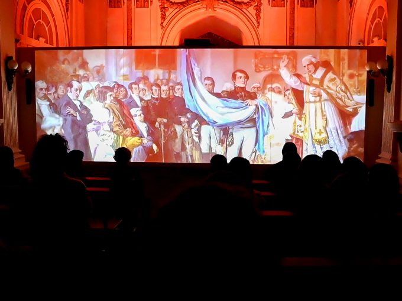
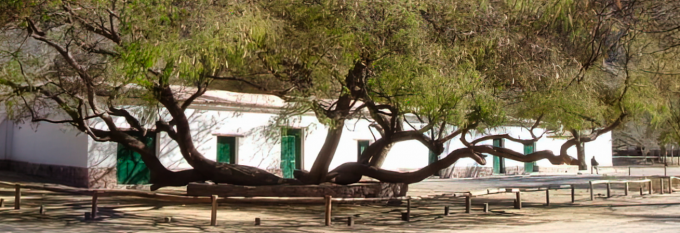

-
Cabildo de San Salvador de Jujuy

Uno de los edificios más representativos e históricos de la ciudad de Jujuy por su valor arquitectónico, fue declarado Monumento Histórico Nacional, Decreto 95.687 / 1941, se encuentra ubicado en la esquina formada por la intersección de las calles Belgrano y Sarmiento. Luego del terremoto del 14 y 15 de enero de 1963 en donde un fuerte temblor derribó el viejo edificio del viejo cabildo, que tenía aparentemente un solo piso y una torre; el nuevo edificio fue comenzado por la empresa Piotti, entre 1864 y 1867, cinco años más tarde se compraron dos casas que limitaban el antiguo Cabildo hacia el norte. Actualmente se descubren estas dos primeras etapas de la reconstrucción en torno a los tres patios principales más cercanos a la calle Belgrano; de ellos el más próximo a la esquina, muy pequeño, denuncia haber sido patio de vivienda; los dos siguientes, muchos mayores, parecen patios de un edificio público.
-
Centro de Interpretación de la Bandera Nacional de la Libertad Civil y Experiencia Éxodo
La Bandera de la Libertad Civil simboliza el aporte de los pueblos del Norte a la epopeya de la Emancipación. Fue donada en el año 1813 por el General Manuel Belgrano como muestra explicita de la gratitud al pueblo jujeño por la gesta heroica del “Éxodo Jujeño”, acontecida el 23 de agosto de 1812. El salón que la resguarda, habilitado en 1927, fue diseñado exclusivamente para este fin, ya que durante muchos años se conservó en diferentes lugares, como el Cabildo, la Iglesia Matriz, la Honorable Legislatura y el despacho de Gobernadores. En abril del año 2015, el Congreso de la Nación declaró a la Bandera Nacional de la Libertad Civil como Símbolo Patrio Histórico, representando los valores de nuestra Patria: libertad, igualdad y justicia.
-
Museo Posta de Hornillos
El origen de la posta data de 1772, lugar de refugio y aprovisionamiento a los viajeros y mayorales y relevo de la caballada que por su ubicación en la ruta, unía el Virreinato del Río de la Plata con el de Lima. La casona perteneció a Don José Gregorio Álvarez Prado; desde 1810 fue destacamento militar y durante las Guerras de Independencia jugó un papel crucial, transformándose en fortín de avanzada y cuartel del Comandante Manuel Álvarez Prado. En 1813 descansó en ella el General Manuel Belgrano a su regreso de la Campaña al Alto Perú. También pasaron por ella Castelli, González Balcarce, Rondeau, el Gral. Güemes, entre otros.